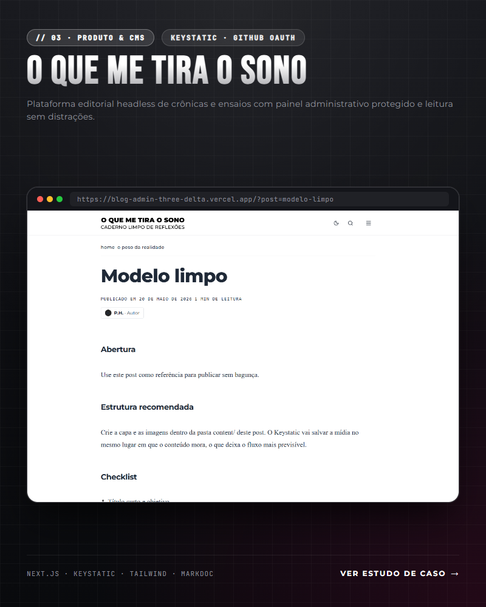
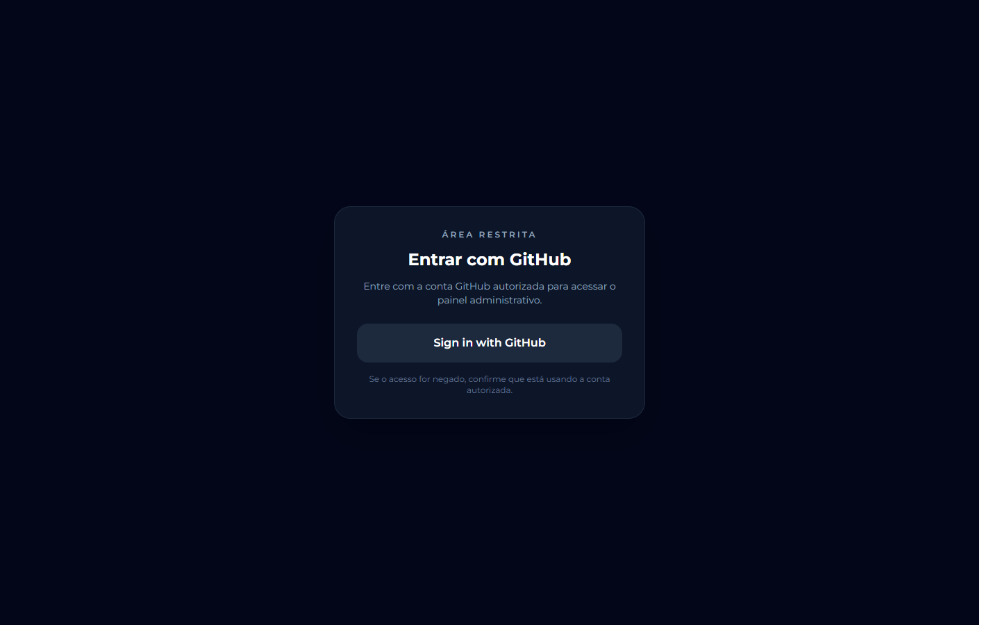
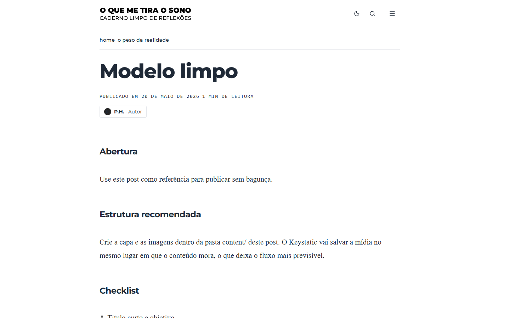
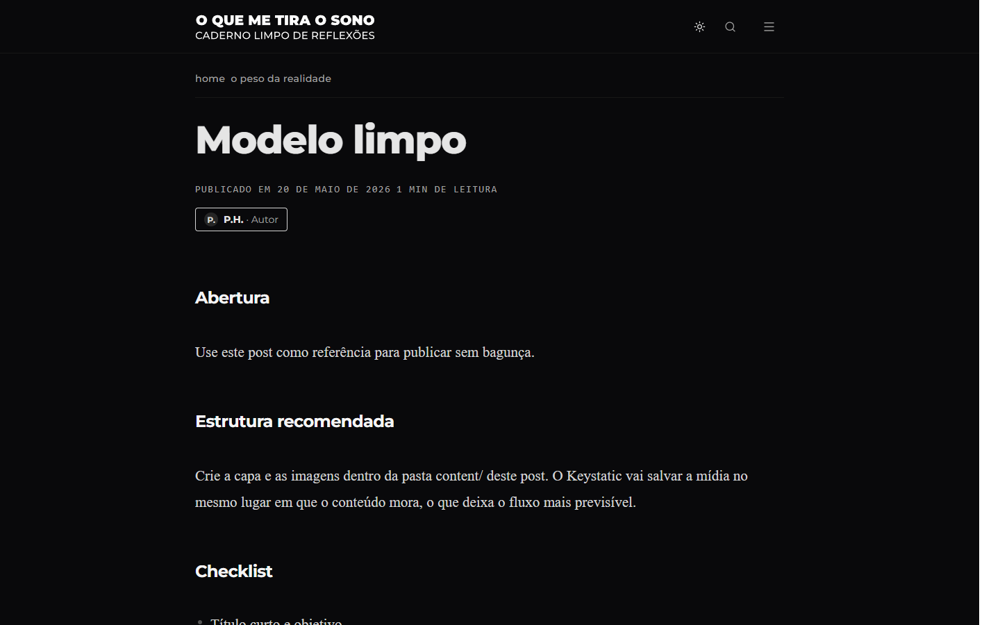
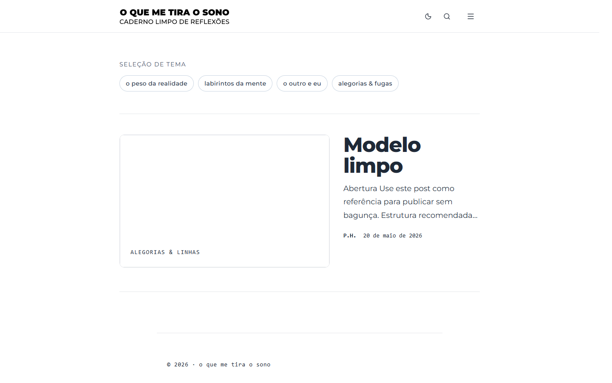

// CASE STUDY — SISTEMA EDITORIAL HEADLESS
O QUE ME TIRA
O SONO
Plataforma editorial autoral e painel administrativo headless com Keystatic, autenticação corporativa via GitHub OAuth e leitura sem distrações.
Maio de 2026
Design de Produto & Front-End
Next.js · Keystatic · Tailwind
Git-Based CMS & Vercel Edge

// IMPACTO EM NÚMEROS — GOVERNANÇA & PERFORMANCE
100%
GIT-BASED & SOBERANIA TOTAL
Conteúdo estruturado em Markdoc/Markdown versionado no repositório. Zero dependência de bancos SQL pesados.
<1.2s
CARREGAMENTO & LEITURA LIMPA
First Contentful Paint ultra-rápido na Vercel Edge. Zero anúncios, popups invasivos ou rastreadores terceiros.
OAuth
SEGURANÇA & GESTÃO RESTRITA
Painel editorial com controle de acesso corporativo via GitHub OAuth, blindando a área de publicação.
// 01 — VISÃO GERAL & O DESAFIO
O Dilema das Plataformas Tradicionais
Fricção Editorial, Bloatware & Falta de Soberania
Plataformas convencionais como WordPress, Medium ou Substack impõem algoritmos opacos, cobranças recorrentes, bancos de dados relacionais pesados e interfaces repletas de elementos de distração. Além disso, o escritor comum que opta por geradores estáticos (SSG) geralmente se depara com a barreira técnica de ter que abrir o terminal, compilar e realizar commits manuais para cada parágrafo ou imagem nova.
A Missão: Experiência Sagrada de Leitura + Painel Web no Git
Projetar um ecossistema completo e autônomo com duas pontas impecáveis:
- Para o Leitor: Uma experiência zen, tipografia suíça calibrada, temas claro/escuro com transição suave, agrupamento por temas filosóficos e tempo de carregamento instantâneo.
- Para o Autor: Uma interface web de edição rica em
/adminprotegida por OAuth via GitHub, capaz de salvar textos e capas diretamente no repositório com deploy contínuo automático.
// 02 — ARQUITETURA & METODOLOGIA
Engenharia Git-Based com Keystatic
Eliminação da complexidade de servidores de banco de dados tradicionais através de um CMS que opera como uma ponte visual sobre arquivos versionados no repositório Git.
Pasta Única por Post
Cada post habita sua própria pasta dentro de src/content/posts/. Imagens de capa e mídias internas moram no mesmo diretório, garantindo portabilidade absoluta e prevenindo links órfãos.
Sincronização Nativa
Ao salvar um rascunho ou publicar em produção, o Keystatic se comunica diretamente com a API do GitHub, criando commits atômicos ou branches dedicadas sem que o autor precise tocar em uma linha de terminal.
Deploy em Segundos
A cada commit aceito, a Vercel compila as rotas estáticas e distribui os artigos globalmente via Edge CDN, entregando páginas em milissegundos com renderização otimizada.
// FLUXO DA ESTEIRA EDITORIAL
// 03 — EXPERIÊNCIA DO USUÁRIO & DESIGN EDITORIAL
Taxonomia Temática & Tipografia
O design foi concebido com disciplina minimalista, garantindo que o protagonismo da tela pertença à escrita e à reflexão.
O Peso da Realidade
Crônicas urbanas, observações do cotidiano, rotinas de trabalho e o atrito com as exigências da vida adulta.
Labirintos da Mente
Ensaios sobre insônia, fluxo de pensamentos na madrugada, ansiedade, processos criativos e dilemas internos.
O Outro e Eu
Relações humanas, encontros, desencontros, diálogo, alteridade e o impacto dos outros em quem nós somos.
Alegorias & Fugas
Ficção lírica, narrativas metafóricas, devaneios noturnos e experimentações de estilo fora da realidade literal.
Modo Escuro com Contraste Curado
Como a essência do projeto dialoga diretamente com a insônia e a leitura noturna, a paleta dark foi construída com tons de preto profundo e cinzas neutros de baixo estresse visual, evitando fadiga ocular em ambientes de pouca luz.
Navegação Lateral & Metadados Precisos
A barra superior traz um menu drawer recolhível que agrupa a navegação por grupos temáticos e links institucionais. Cada artigo exibe o tempo estimado de leitura (ex: "1 min de leitura") e perfil do autor (P.H.).
// 04 — GOVERNANÇA & PAINEL RESTRITO
Autenticação & Proteção Editorial
A área administrativa foi blindada com controle de autenticação via OAuth corporativo, garantindo que somente autores com chave de acesso possam publicar e alterar posts.
Área Restrita do Autor
Qualquer tentativa de acesso direto à rota administrativa redireciona o usuário para a tela de autenticação do GitHub (/login?callbackUrl=%2Fadmin), validando permissões organizacionais.
Rascunho vs. Publicado
Textos em desenvolvimento mantêm status Draft, visíveis apenas localmente ou em branches de prévia. Apenas textos finalizados ganham a flag Published para entrar no feed oficial.

// 05 — PROTÓTIPO EM TELA & GALERIA
Interface em Produção
Explore abaixo as interfaces reais do projeto rodando na Vercel Edge. Clique em qualquer card para abrir a visualização em alta definição.


Modo Escuro Suíço
Leitura reflexiva noturna sem fadiga.
Painel Administrativo
Segurança de publicação no GitHub.

Grupos de Leitura
Filtragem ágil por temas autorais.
// 06 — IMPACTO, ENTREGÁVEIS & RESULTADOS
Autonomia Total & Legado Editorial
O ecossistema provou que é possível construir um produto digital editorial sofisticado sem custos de infraestrutura de banco de dados e com soberania de código.
R$ 0,00
Custo Recorrente de Banco
Eliminação total de custos mensais com bancos de dados relacionais em nuvem, utilizando o próprio Git como camada de persistência.
100%
Custódia do Conteúdo
Todos os ensaios pertencem ao autor em arquivos Markdown/Markdoc puros, imunes a encerramento de serviços ou bloqueios de plataforma.
<400ms
Tempo de Resposta na Edge
Geração estática inteligente na Vercel garantindo que leitores acessem crônicas instantaneamente de qualquer lugar do mundo.
Conheça o Projeto ao Vivo
Navegue pelas crônicas, teste a alternância de temas claro/escuro e inspecione a estrutura do repositório no GitHub.